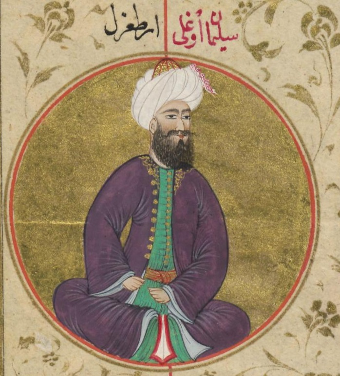

Osman Gazi Kimdir?
Benimle Buradan iletişime geçebilirsin
ERTUĞRUL GAZİ

Hayatı
Ertuğrul Gazi veya Ertuğrul Bey (Osmanlıca: ارطغرل; ö. ~1280, Söğüt), 13. yüzyılın ortalarında Oğuzların Kayı boyunun lideri ve Osmanlı Beyliği'nin kurucusu olan Osman Bey'in babasıdır.
13. yüzyılın ortalarında Orta Asya'daki Cengiz Han'ın Moğol baskısından kaçan Kayılar, ilk olarak Doğu Anadolu civarlarına geldiler. Kayı Boyu beyi Süleyman Şah'ın (veya Gündüz Alp) Fırat Nehri'nden geçerken boğulup vefat etmesi üzerine Ertuğrul Bey, Kayılar'ı Bizans sınırına göç ettirmek istedi. Fakat kardeşleri bu fikrine karşı çıktı. En nihayetinde, bu görüş ayrılıkları nedeniyle Kayılar ikiye bölündü: Ertuğrul'un ağabeyleri Sungur Tekin ve Gündoğdu geride, Ahlat'ta kalırken; Ertuğrul, kardeşi Dündar ile birlikte Batı'ya doğru göç etti.
Anadolu'ya gelmesi ve Söğüt'e yerleşmesi
Anadolu Selçuklu Devleti'nin Bizans İmparatorluğu sınırında bulunan uç emirliklerindeki Türk sayısı, 1243 yılında gerçekleşen Kösedağ Muharebesi sonrasında Anadolu'da başlayan Moğol istilaları sebebiyle artış göstermiş; buna paralel olarak Bizans topraklarına yapılan akınlar artmıştı. Bu akınlar sonucunda, Bizans topraklarında ikinci defa uç beylikleri kurulmaya başlandı.
Sultan Öyüğü (günümüzde Eskişehir) bölgesinde ise, uç topraklarının en ileri hattı olan Söğüt'te yerleşen Türk boyunun başında Ertuğrul Gazi bulunmaktaydı. Ertuğrul Gazi'ye bağlı boyun bu bölgeye ne zaman ve nasıl geldiği kesin olarak bilinmemekle birlikte, konu hakkında farklı görüşler mevcuttur.
Ruhî Tarihi'ne göre Ertuğrul Gazi veya atalarının önderliğindeki 340 kişilik Türk boyu, Selçuklular ile birlikte Türkistan'ı terk edip Anadolu'ya gelerek Ankara civarındaki Karacadağ yakınlarına yerleşti. 1222-1230 yılları arasında, İznik İmparatorluğu hükümdarı III. İoannis ile Anadolu Selçuklu Devleti Sultanı I. Alâeddin Keykubad arasında Eskişehir ve Ankara civarında gerçekleşen mücadelelerden haberdar olan Ertuğrul Gazi, orduya hizmet amacıyla çarpışmalara katıldı. Bu kapsamda Karacahisar'a yapılan kuşatmada yer aldı. Bunu memnuniyetle karşılayan I. Alâeddin Keykubad, Ertuğrul Gazi'yi akıncı başı yaptı. 1230 yılında, Harezmşahlar ile yapılan Yassı Çemen Muharebesi ve Moğollarla yapılan Kösedağ Muharebesi sebebiyle I. Alâeddin Keykubad ile III. İoannis arasında barış sağlandı. Kısa süre sonra I. Alâeddin Keykubad, Ertuğrul Gazi veya atalarına yardımlarından ötürü Söğüt'ü kışlak, Domaniç'i yaylak olarak verdi.[9] Ertuğrul Gazi akınlarına buradan devam ederken, I. Alâeddin Keykubad'ın ayrılmasının ardından Karacahisar elden çıktı. Bunun üzerine Ertuğrul Gazi, yerli tekfurlarla uzlaşma yoluna gitti.
Ruhî Tarihi'nde yer alan bu bilgileri Osmanlı dönemi tarihçisi Neşrî, Ruhî'den aktarmaktadır.Âşıkpaşazâde ise bu anlatılanları kısaltmış ve içeriğini değiştirerek, yaşananları Osman Bey dönemine nakletmiştir.
Başka bir hikâyeye göre ise, Sürmeli Çukur (Aras Nehri vadisi) veya Ahlat'tan Ankara civarındaki Karacadağ eteklerine yerleşen Ertuğrul Gazi ve aşireti, burada bir süre kaldı ve İznik İmparatoru III. İoannis'e karşı I. Alâeddin Keykubad'ın ordusunda yer aldı. Ancak Moğol saldırıları sebebiyle I. Alâeddin Keykubad'ın Konya'ya dönmesinin ardından Ertuğrul Gazi'ye Söğüt'ü kışlak, Domaniç'i yaylak olarak tayin etti.
Ölümü
Ertuğrul Gazi'nin ölüm tarihi kesin olarak bilinmemektedir. Birçok kaynak onun 1280'li yıllarda (1280, 1281, 1282, 1288 veya 1289) ve tahminen 80'li veya 90'lı yaşlarda vefat ettiğini söylemektedir. Söğüt'te vefat eden Ertuğrul Gazi'nin, oğlu Osman Gazi tarafından yaptırılan bir türbesi bulunmaktadır.
Kardeşleri
- Sunkur-Tekin
- Ertuğrul
- Gündoğdu
- Tündar(Dündar)
Çocukları
- Savcı Bey
- Osman
- Gündüz Alp